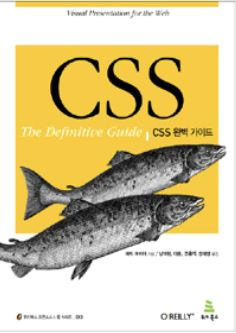

2019147507 김산의 E-Commerce 사이트입니다. 이 사이트에서는 책을 팝니다.
교수님이 과제를 내주심에 따라 계속 업데이트 될 예정입니다.
애국가를 제창하겠습니다.
'1절'
동해물과 백두산이 마르고 닳도록
하느님이 보우하사 우리나라만세
무궁화 삼천리 화려강산
대한사랑 대한으로 길이 보전하세
'2절'
남산 위에 저 소나무 철갑을 두른 듯
바람서리 불변함은 우리 기상일세
무궁화 삼천리 화려강산
대한사랑 대한으로 길이 보전하세
'3절'
가을 하늘 공활한데 높고 구름 없이
밝은 달은 우리 가슴 일편단심일세
무궁화 삼천리 화려강산
대한사랑 대한으로 길이 보전하세
'4절'
이 기상과 이 맘으로 충성을 다하여
괴로우나 즐거우나 나라 사랑하세
무궁화 삼천리 화려강산
대한사랑 대한으로 길이 보전하세